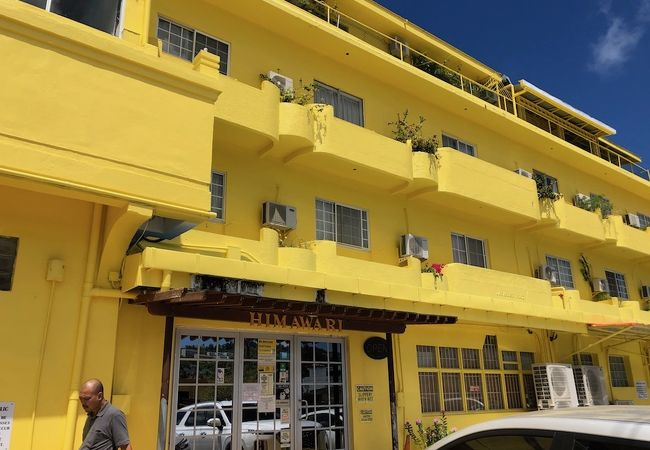
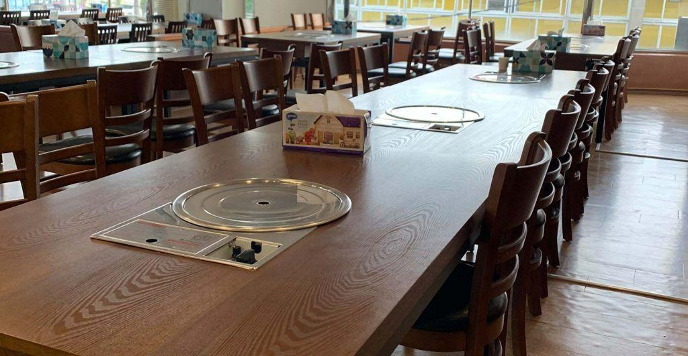
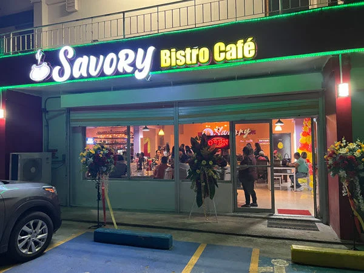

Christopher's Top 3 Restaurants in Saipan
Saipan is a pretty small island, with not too much to do... other than EAT!! This website contains
my top 3 restaurants I know will satisfy my taste buds. If you aren't into Asian cuisine, you may leave since all
3 restaurants revolve around the diverse ingredients and flavors that Asian cuisine has to offer.
(To see more
about the restaurants, please refer to Info about the Restaraunts in the header and footer.)
My Top 3 Restaurants
- Himawari
- Chun Ji
- Savory Kitchen
1. Himawari

Himawari is a Japanese restaurant located in Garapan. They offer competitive prices for great food
compared to most restaurants.
The food could be described as savory as well as fulfilling.
From raw fish to deep-fried pork, to a hot bowl of udon or a nice cold salad,
Himawari has
it all for those with different diets, cravings, or how much of an appetite a person might have.
2. Chun Ji

Chun Ji is a Korean Restaurant located in Garapan. I'd recommend this restaurant to anyone with a
passion for cooking their own food.
Chun Ji offers premium quality meat, soups, and other korean dishes for a
premium quality price. It isn't the cheapest Korean BBQ places
in Saipan, but it is popular with tourists and some of the locals.
3. Savory Kitchen

Savory is a Filipino-styled restaurant located in middle road. Recently, Savory has moved from Beach Road, Garapan, to middle road.
The new opening isn't so recent, but despite the location, their food is still superb. Savory has authentic Filipino dishes, as well as
their
on twist on foods from different culutres. For example, their Korean-Styled Short Ribs.